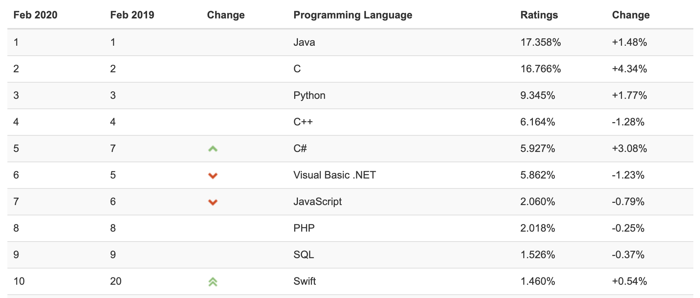
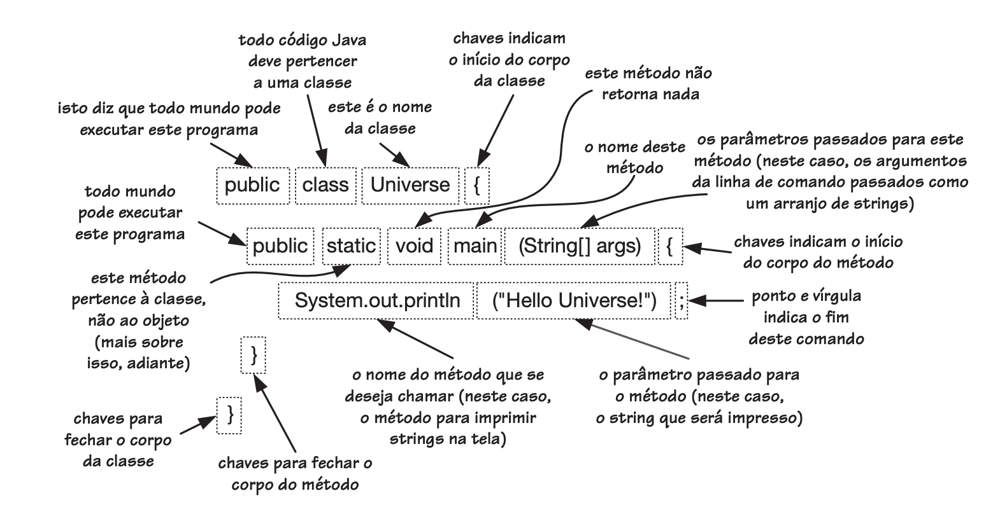
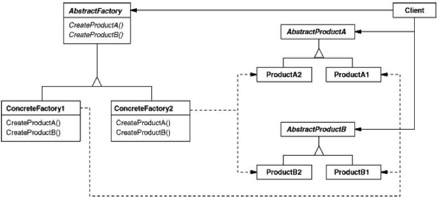

name: inverse class: center, middle, main-title # Revisão Java Laboratório de Programação --- #Introdução Java é uma linguagem de programação de uso geral baseada Orientação a Objetos Filosofia: > Desenvolvedores de aplicativos escrevam uma vez, executem em qualquer lugar (WORA- Write once Run Anywhere) - Bytecode / JVM / Independente de arquitetura - Sintaxe semelhante ao C e C++ --- #Hype Posições diferentes em várias análises: > `Segundo` para (The 10 most popular programming languages, according to the‚ Facebook for programmers slides - 2019) --- perde para Javascript > `Terceira` segundo o GitHub no seu levantamento: Year in Review https://octoverse.github.com/ --- #MarketShare Em fevereiro/2020 segundo o Tiobe-Index (https://www.tiobe.com/tiobe-index/):  --- #$$$$ Não depende 100% linguagem. `Mais dos skills`. Segue USA: <center> <img src="jobs.png" width="450"> </center> --- #Ok, mas vamos a revisão. Como funciona? <center> <img src=java_code.png> </center> --- #Tá, mas JVM? Java Virtual Machine <center> <img src=java_jvm.png width="700"> </center> --- #JRE .. JDK JRE = Java Runtime Environment JDK = Java Development Kit <center> <img src=java_jre_jdk.png width="400"> </center> --- #JIT Just in-time Compiler <center> <img src=java_jit.png width="700"> </center> --- #Ponto inicial - Totalmente orientada à objetos - Ponto operativo: `Objetos` - Que tem seu estado na forma de `atributos` - Definidos por Classes (`class`) - Instanciados por `new` (ou por um padrão de projeto ;) ) que chamam os seus `construtores` - Autoreferenciados por `this` - Operados por `métodos` - Os `métodos` e `atributos` possuem visibilidade: `public`, `private`, `protected` - podem assumir diferentes formas dependendo da origem `polimorfismo` - ambos também podem ser modificados para serem `static` ou `syncronizable` --- ##Ponto inicial  --- #Bean em Java Objeto simples em Java (Entidade, POJO) ```java package com.back.api; public class Course { private int id; private String name; private String description; //construtores public Course() { } public Course(int id, String name, String description) { super(); this.id = id; this.name = name; this.description = description; } //continua } ``` --- #Bean em Java Get/Set ```java public int getId() { return id; } public void setId(int id) { this.id = id; } public String getName() { return name; } public void setName(String name) { this.name = name; } public String getDescription() { return description; } public void setDescription(String description) { this.description = description; } //continua ``` --- #Bean em Java Todo mundo herda de Object - Mesmo sem o `extends` - `@Override` redefine um comportamento presente em uma classe pai ```java @Override public String toString() { return "Course [id=" + id + ", name=" + name + ", description=" + description + "]"; } ``` --- #Modificadores de Classe e Herança - `abstract`: não pode ser instanciada. Normalmente para usar como extensão, instaciação especializada - `final`: não pode ser estendida - `public`: sim, pública. Sem o operador ela é modificada para um estado `amigável` -Herança: - usa-se `extends`: obtem estado e comportamento do pais (pode ser múltiplo) --- ##Conta Abstrata ```java public abstract class Conta { private long numero; private long agencia; private String proprietario; private float saldo; public Conta(long numero, long agencia, String proprietario) { super(); this.numero = numero; this.agencia = agencia; this.proprietario = proprietario; this.saldo = 0; } //preste atenção aqui public abstract float sacar(float valor); public abstract float depositar(float valor); ``` --- ##Conta corrente final ```java public final class ContaCorrente extends Conta { public ContaCorrente(long numero, long agencia, String proprietario) { super(numero, agencia, proprietario); } @Override public float sacar(float valor) { // TODO Auto-generated method stub System.out.println("Saque em conta correte"); return 0; } @Override public float depositar(float valor) { // TODO Auto-generated method stub System.out.println("Depósito em conta correte"); return 0; } } ``` --- ##Conta Investimento abstrata ```java public abstract class ContaInvestimento extends Conta { public ContaInvestimento(long numero, long agencia, String proprietario) { super(numero, agencia, proprietario); // TODO Auto-generated constructor stub } public abstract void investir (float valor); } ``` --- ##FundoDi herdando ```java public class FundoDi extends ContaInvestimento { public FundoDi(long numero, long agencia, String proprietario) { super(numero, agencia, proprietario); // TODO Auto-generated constructor stub } @Override public void investir(float valor) { // TODO Auto-generated method stub System.out.println("Investimento em conta correte de fundo de investimento"); } @Override public float sacar(float valor) { // TODO Auto-generated method stub System.out.println("Saque em conta correte de fundo de investimento"); return 0; } @Override public float depositar(float valor) { // TODO Auto-generated method stub System.out.println("Depósito em conta correte de fundo de investimento"); return 0; } } ``` --- ##Um pouco de main() ```java public class Main { public static void main(String []args) { Conta a, b; //a = new Conta(8618, 19257, "Geraldo"); //não pode ser instanciado! a = new ContaCorrente(8618, 19257, "Geraldo"); b = new FundoDi(1899, 178771, "Geraldo"); a.sacar(10); b.depositar(15); ((ContaInvestimento)b).investir(60); ContaInvestimento c; c = new FundoDi(111, 89898989, "outro"); c.investir(60); c.sacar(15); } } ``` --- #Polimorfismo - Mesmo comportamento, chamado de maneira diferentes - Estático: método implementado de várias maneiras na classe - Dinâmico: um objeto específico sobrepõe o comportamento do objeto pai (sobrescrita ou sobrecarga) --- ##Polimorfismo - Strategy - Um exemplo clássico é o padrão de projeto `Strategy` - considere o código ```java class Empregado { int quantiaAPagar(String tipo) { if (tipo.equals("Engenheiro")) lerSalarioMensal(); if (tipo.equals("Vendedor")) lerSalarioMensal() + lerComissao(); } //e se chegar outro tipo de carreira? } ``` --- ##Polimorfismo - Strategy ```java //Essa classe que vai chamar o TipoDeEmpregado dependendo do tipo passado class Contexto { private TipoDeEmpregadoStrategy _tipo = null; ...set/get int quantiaAPagar() { return _tipo.quantiaAPagar(); } } class TipoDeEmpregadoStrategy { abstract int quantiaAPagar(Empregado emp); } class Engenheiro extends TipoDeEmpregadoStrategy { @Override int quantiaAPagar(Empregado emp) { return emp.lerSalarioMensal(); } } class Vendedor extends TipoDeEmpregadoStrategy { @Override int quantiaAPagar(Empregado emp) { return emp.lerSalarioMensal() + emp.lerComissao(); } } ``` --- #Polimofismo: Abstract Factory - O `Abstract Factory` proporciona uma interface para criar famílias de objetos relacionados ou dependentes sem especificar suas classes concretas. - a ideia é ter um `Factory` que instancia os objetos para você - a instancia do objeto vai depender do `contexto` de execução - imagine seu programa rodando no Web e no Móvel - no ambiente Web, o menu precisa ser de uma forma - no Móvel de outra maneira --- ##Polimofismo: Abstract Factory <br/> <center></center> --- ##Polimofismo: Abstract Factory ```java package example; //centralizador de Factory interface GUIFactory { public Menu createMenu(); } //Factory de menu web class WebFactory implements GUIFactory { public Menu createMenu() { return new WebMenu(); } } //Factory de menu móvel class MovelFactory implements GUIFactory { public Menu createMenu() { return new MovelMenu(); } } ``` --- ##Polimofismo: Abstract Factory ```java package example; //produto em si interface Menu { public void paint(); } //produto web class WebMenu implements Menu { public void paint() { System.out.println("Eu sou um WebMenu"); } } //produto movel class MovelMenu implements Menu { public void paint() { System.out.println("Eu sou um MovelMenu"); } } ``` --- ##Polimofismo: Abstract Factory ```java package example; class Aplicacao { //o cliente não precisa saber que produto tem em mãos public Aplicacao(GUIFactory factory) { Menu menu = factory.createMenu(); menu.paint(); //o que interessa é desenhar o menu } } class Principal { public static void main(String args[]) { //chamar Application(); int tipoDeMenu = 0; //pode ser uma variável de ambiente if (tipoDeMenu == 0) new Aplicacao(new WebFactory()); else new Aplicacao(new MovelFactory()); } } ``` --- #Interface (especificação) - Primordial em Java - Capacidade de `especificar o comportamento` - <b>Separado de sua construção \o/. Mesmo numa biblioteca separada!!! </b> - usando o par: `interface` `implements` - `extends` pode ser usado em conjunto com `implements` (herança múltipla em Java) ```java interface Menu { public void paint(); } class WebMenu implements Menu { public void paint() { System.out.println("Eu sou um WebMenu"); } } ``` --- ##Generics: o famoso `<T>` - Poupar `casting excessivo` - Ao invés de colocar o tipo, coloque o generics - Muito comum com estrutura de dados - Numa definição de classe ou interface ... ```java public interface List<T> extends Collection<T> { ... } ``` - Num get/set ```java T get(int index); void set(T valor); ``` --- ##Generics: o famoso `<T>` - Um outro método qualquer: ```java public <T> getFirst(List<T> list) ``` - Num iterator ```java List<String> str = new List<>(); ... for (Iterator<String> iter = str.iterator(); iter.hasNext()) { String s = iter.next(); System.out.print(s); ``` - Ou num foreach ```java for (String s: str) { System.out.print(s); } ``` --- ##Generics: o famoso `<T>` ```java public class Lista<T> { private T valor; private Lista prox; public Lista(T valor) { this.valor = valor; this.prox = null; } public T getValor() { return valor; } public void setValor(T valor) { this.valor = valor; } public Lista getProx() { return prox; } public void setProx(Lista prox) { this.prox = prox; } ``` --- ##Generics: o famoso `<T>` ```java public void inserir(T valor) { Lista t = this; while (t.prox != null) t = t.prox; t.prox = new Lista(valor); } } ``` --- name: inverse class: center, middle, main-title #Respire: um exercício --- # Em tempos de IRPF: Um alguém precisa saber quanto pagar de impostos em suas operações e aplicações. O fato é que se paga imposto é que diferentes aplicações possuem diferentes aliquotas. Como fazer? Implemente para o nosso amigo esse programa: - entra com os valores de aplicações/movimentações (podem ser várias) - No fim, o programa emite quanto de imposto foi pago - 15% para Fundo - 20% no lucro da venda de fundo imobiliário - 15% no lucro da venda do ações > Pense na solução --- # Em tempos de IRPF: ok, você pensou numa solução com baixa ou alta `coesão`? - tipo, tem muito código que repetido? Muita decisão enumerável/qualificável? > "1 classe, 1 objeto, 1 responsabilidade" > Pense em outra solução --- # Em tempos de IRPF: Agora, analise: > Governo federal muda forma de calcular imposto de renda para Fundos. Agora vai ser: - Investimentos com até 6 meses: 25% - Investimentos com até 6 à 12 meses: 20% - Investimentos acima de 12 meses: 15% > Qual impacto da sua solução no seu sistema? --- # Em tempos de IRPF: Quantas vezes a forma de calcular imposto muda no ciclo de vida de um software? Qual o custo de manutenção? - durante o desenvolvimento - pós desenvolvimento, sem clientes - pós desenvolvimento, com clientes > Agora sim, qual a solução? Implemente --- name: inverse class: center, middle, main-title #Extra: Mais algumas coisas --- #Wildcard <?> - Mas e se tentarem colocar na mesma lista, coisas de classes diferentes? - Errado: ```java List<Dog> dogs = new ArrayList<>(); List<Animal> animals = dogs; // não compila é somente um exemplo animals.add(new Cat()); Dog dog = dogs.get(0); // nada de bom iria acontecer aqui ``` - Use `wildcard <?>` --- ##Wildcard <?> - Upper Bounded ```java public void printAllSpecies(List<? extends Animal> animals) { for (Animal animal : animals) { System.out.println(animal.getSpecies()); } } ``` - Lower Bounded Wildcards ```java public void loadNewAnimals(List<? super Animal> animals) { Animal animal; while ((animal = searchNewAnimals()) != null) { animals.add(animal); } } ``` - Unbounded ```java Class<?> animal = Class.forName("Animal"); ``` --- #Mais itens importantes - Controle de erros: `try` `catch` `Exception` `finally` - Collections: - `Arrays` tipo `ArrayList` --> thread safe - `Vector` `HashTable` --> no thread safe - `Map` tipo `HashMap` - `Iterator` - Threads e `syncronizable` - `Reflection`